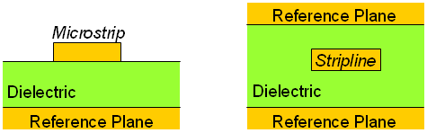

Signal trace: Microstrip vs. Stripline
For high-speed DUT board designs the typical signal trace lines used for routing high-speed signals are stripline and microstrip. The graphic below visualizes the basic geometry differences of microstrips (left) and striplines (right).

Although there are other trace types for high-speed digital signal lines (for example, co-planar microstrip), they are rarely used on DUT boards due to the routing density.
The advantages and disadvantages of microstrips and striplines are as follows:
|
Advantages |
Disadvantages |
|---|---|---|
Microstrip |
|
|
Stripline |
|
|
If you use microstrip lines, Advantest recommends a nickel-gold plating with a minimum of 30 microinches of gold. At high frequencies the skin effect will force the currents to flow in the outside layer of low-loss gold instead of the higher loss nickel underplating.
You can route differential pairs on an external microstrip layer or on an internal stripline layer. A differential pair typically requires length matching, but coupling is not required for electrical performance and it is very common to route it as adjacent single ended traces to maintain the 50 ohm single-ended impedance of the connecting ATE channels. Also, edge coupling is not very strong for a PCB trace and it typically requires less than the trace width for the gap between traces to achieve any significant differential coupling. We recommend differential pair routing with coupling only for high density applications where it reduces the required amount of routing space.
Loss is the biggest challenge on an ATE test fixtures. Therefore, Advantest recommends to route differential pairs with minimum coupling at 3x the trace width spacing between the pair of traces, and never to go less then 1x the trace width for the gap. This maximizes the trace widths for low loss, while taking advantage of matched routing with better common mode rejection. Modern ATE cards have the ability to adjust the electrical length/skew of a signal path, but this does not always apply to the two paths in a differential pair. And there is still a need for length/phase matching on the PCB layout of the two traces in a differential pair.
Functional changes
- Introduced before SmarTest 6.3.2